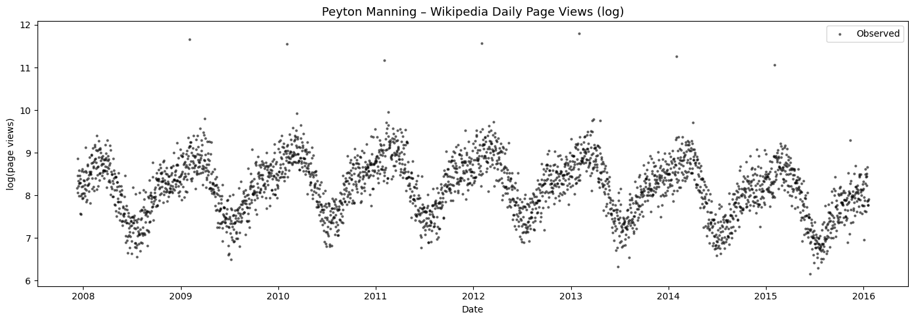
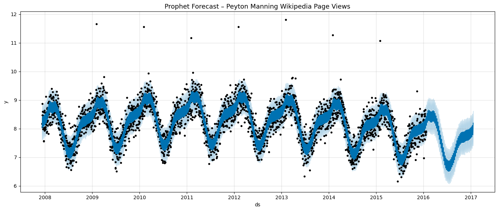
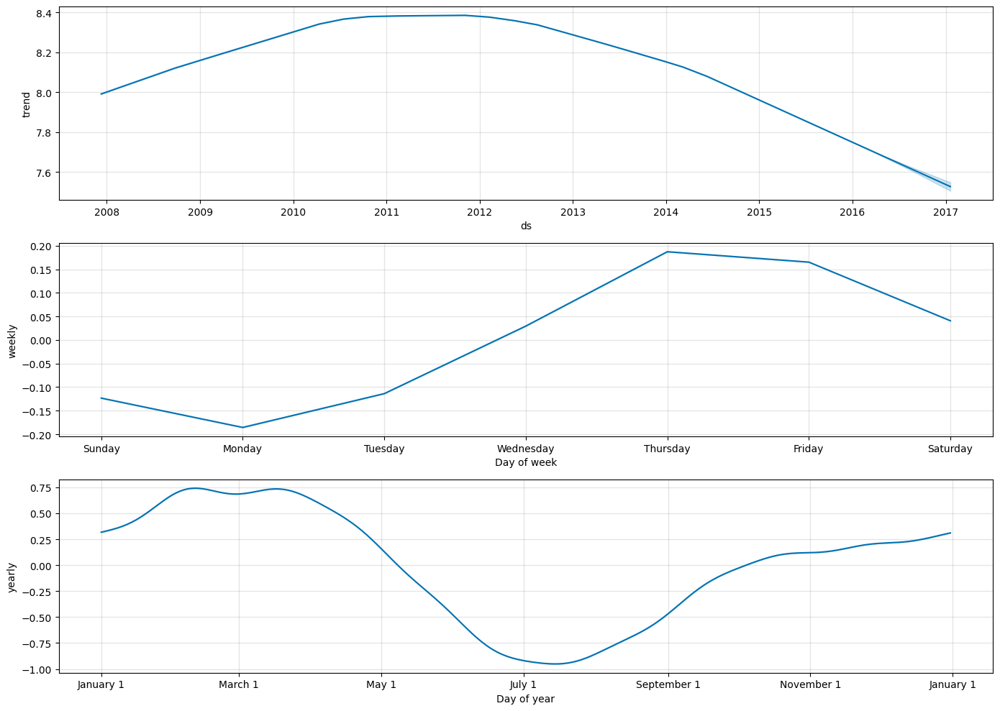
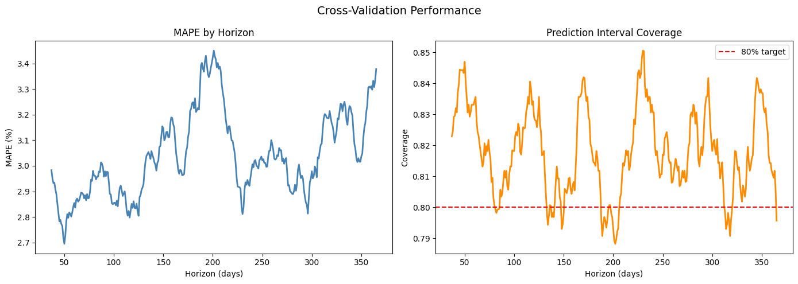

Modeling a seasonal time series and validating forecast accuracy with rolling cross-validation, rather than trusting a single fit.
Most real demand series aren't one clean trend line — they're a trend plus a yearly cycle, plus a weekly cycle, plus the occasional spike that breaks the pattern entirely. A model that just fits a smooth curve through the data will miss all of that structure. The goal here was to use Facebook's Prophet library, which is built specifically to decompose a series into trend, yearly seasonality, and weekly seasonality, and then to actually validate that the resulting forecast holds up rather than just eyeballing the chart.
I used the Peyton Manning Wikipedia daily page-view series — the standard Prophet quick-start dataset — as a stand-in for a seasonal demand series. It runs roughly 2,964 daily observations from December 2007 to January 2016, stored as log(page views), which keeps the yearly NFL-season spikes, weekly post-game traffic bumps, and Super Bowl outliers all in one series.

I fit a Prophet model with yearly and weekly seasonality enabled and daily seasonality off, since the data is already daily-aggregated. Prophet's changepoint detection handles the trend shifts automatically — I didn't need to manually flag when the underlying pattern shifted.

The real value of Prophet over a simpler model is the decomposition — being able to separate the long-term trend from the recurring seasonal effects and see each one on its own.

What the decomposition showed: a rise in the trend through around 2012 followed by a gradual decline; a yearly cycle peaking October–February (NFL season) and troughing in July (off-season); and a weekly cycle peaking on Mondays (post-game traffic) and lowest on Saturdays.
A forecast chart that looks good is easy to produce — the harder part is proving it would have held up historically. I ran rolling cross-validation: training on an initial window, forecasting forward, then sliding the window ahead and repeating, so the model is evaluated on data it never saw during that fold's training.

Result: mean absolute percentage error of roughly 3–4% across a one-year horizon, with prediction intervals covering the true value about 82–85% of the time against an 80% target — meaning the model's stated uncertainty was well-calibrated, not just optimistic.
The specific series here is a stand-in, but the workflow transfers directly to business forecasting: decompose a demand or revenue series into trend and seasonality instead of fitting a single curve, and validate with rolling cross-validation instead of trusting an in-sample fit. A model's forecast is only as useful as your evidence that its uncertainty estimate is honest.